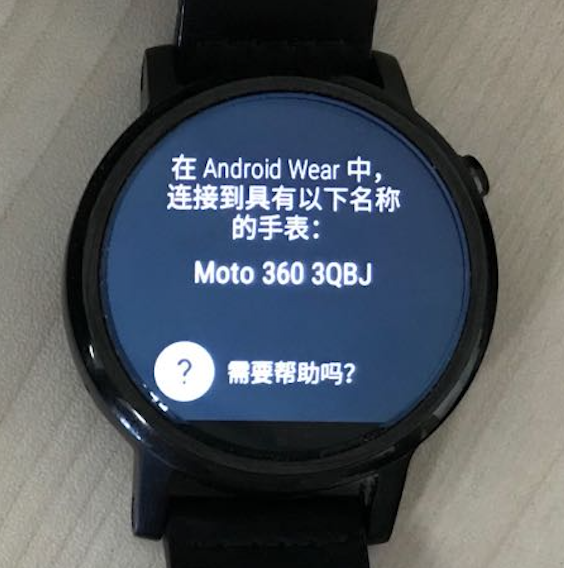

智能手表连接教程¶
教程目标¶
将**非苹果系列智能手表**（例如Moto360，LG Sport，HUAWEI手表等）与**安卓手机**进行配对连接，并通过**adb工具**（Android Debug Bridge，安卓调试桥）进一步与电脑连接，以实现下面两个功能：
- 从智能手表向电脑传输数据（通过adb工具）
- 从电脑向智能手表安装程序（通过Android Studio）
工具准备¶
-
非苹果系列智能手表
-
安卓手机，安装软件Wear OS by Google
 ，在应用商店或浏览器中均可搜索到
，在应用商店或浏览器中均可搜索到 -
adb工具，见
ADB/文件夹，Windows操作系统的adb位于ADB/Win，Mac或Linux系统的adb位于ADB/Mac
示例¶
以下连接教程以Moto 360手表连接到小米手机(MI 4LTE)为例
智能手表连接到手机¶
注：智能手表最多只能与一部智能手机连接，如果要与其他手机连接，必须断开与之前手机的连接
-
智能手表：如果智能手表之前曾与其他手机连接，则需先断开连接并恢复出厂设置。点击
设置(Settings)->系统(System)->断开连接并重置(Disconnect & reset)，等待重启完成后，手表会进入匹配手机的页面；如果智能手表之前不曾与其他手机连接，则开机后直接进入匹配手机的页面，如图1 -
智能手机：打开WiFi或数据连接以保证能够连接到互联网，打开蓝牙，打开
Wear OS应用，（点击左上角）打开添加新手表，在下方出现的列表中选择待匹配手表并点击，完成匹配，如图2。若无法连接成功，可以采用以下几个方案：重新启动Wear OS应用；在手机设置->蓝牙->已配对设备中，如果之前曾与该手表进行过配对，则选择该手表并取消配对 -
智能手表：点击
设置(Settings)->系统(System)->关于(About)，连续点击版本号(Build number)7次，则会在设置(Settings)菜单下出现开发者选项(Developer options)，点击开发者选项(Developer options)，打开ADB调试(ADB Debugging)和通过蓝牙调试(Debug over Bluetooth) -
智能手机：打开
Wear OS应用，（在底部）点击高级设置，打开通过蓝牙调试，此时应该显示主机：未连接；目标：已连接，如图3。如果目标显示未连接，则重新启动Wear OS应用再查看



智能手表连接到电脑¶
-
智能手机：通过USB连接线连接到电脑
-
电脑：在电脑上打开命令行或终端，执行(Windows)
.\connect.ps1或(Mac, Linux)./connect命令，此时智能手机高级设置中的主机应显示已连接，若有以下情况，进行对应操作：2.1 若出现
error: more than one device/emulator，则执行./adb kill-server关闭已有的连接2.2 若出现
device not found，在智能手机上，点击设置->开发者选项->选择USB配置->仅限充电，此时手机弹出在该电脑上的USB调试权限设定，设定权限后再执行(Windows).\connect.ps1或(Mac, Linux)./connect命令2.3 若出现
This adb server's $ADB_VENDOR_KEYS is not set，则找到(Windows)C：Users/$Name/.android或(Mac, Linux)~/.android文件夹，将文件夹中的adbkey.pub,adbkey删除，然后再执行(Windows).\connect.ps1或(Mac, Linux)./connect命令 -
智能手表：主机连接成功后，手表上会出现'是否允许在该PC上进行调试'，选择'总是允许'
- 电脑：Android Studio可以找到智能手表并可以安装程序
- 智能手表：点击
设置(Settings)->应用(Apps)->$(安装的应用)->权限(Permissions)，打开相应的应用权限